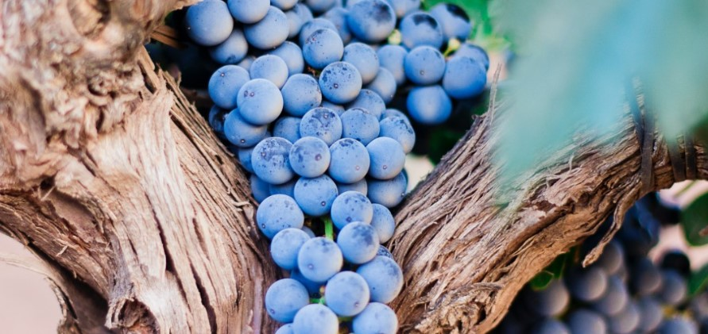

Vinresa till Rioja
2023-01-20
Det sägs att vindistrikten i Rioja är äldre än franska Bordeux och här finns några utav Spaniens bästa viner. Riojas landskap är vackert med mycket natur och berg. Varför inte ta en vinresa till Rioja som semester? Antingen kan man boka flyg och anordna resan själv eller åka med en ordnad resa. De flesta vinresor brukar även kombinera besöken av vingårdar med en del sevärdigheter, restauranger och annat som kan vara trevligt. I närheten av Rioja ligger matstaden San Sebastian, staden Bilbao där Guggenheim museet finns och storstaden Barcelona. I dessa paketresor brukar även flyg, hotell och transfer ingå så du behöver inte tänka på så mycket själv vilket kan vara bekvämt.
Området Rioja är indelat i tre olika vinregioner som heter Rioja Alta, Rioja Oriental och Rioja Alavesa. Här finns cirka 500 vingårdar. I Rioja odlar man mest druvan Tempranillo men även Garnacha, Mazuelo och Graciano. Garnacha används mycket i roséviner. För de vita vinerna odlas Viura, Garnacha Blanca och Malvasia. Huvudorten i Rioja heter Logroño, där man kan hitta små tapasbarer och uteserveringar på dess smågator.
Några vingårdar som kan vara värda att boka ett besök på om man åker själv är:
- Bodega Manzanos: som är en familjeägd vingård som funnits sedan 1890 talet. Här producerar man både röda och vita viner och dom är bland de tio största vinproducenterna i Rioja.
- Ostatu: den här vingården är hela 250 år gammal och vinproduktion av världsklass. Här kan gå runt och titta på de vackra miljöerna och testa deras viner.
- Bodega Corral: ligger precis vid Camino Francés som är den äldsta pilgrimsvägen till Santiago de Compostela och är alltså ett världsarv. Här finns förstklassiga viner och man använder samma metoder för producering av vin idag som för 100 år sedan.
Det var bara tre av alla de 500 fantastiska vingårdar som finns att besöka!
Skål!